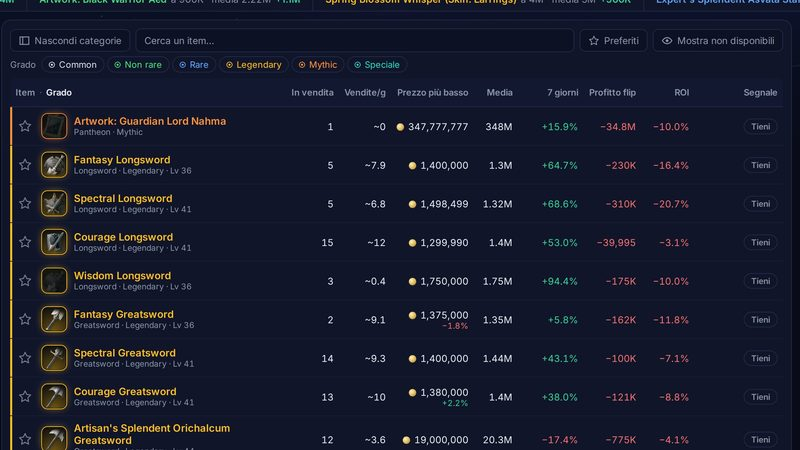
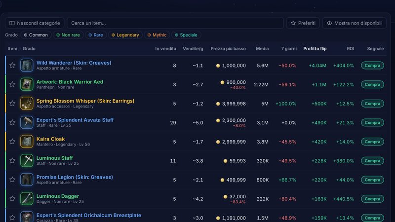
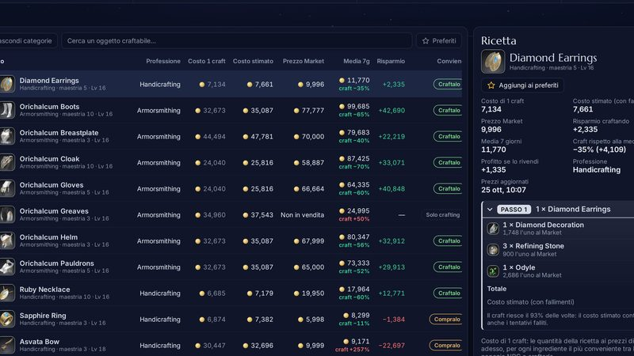
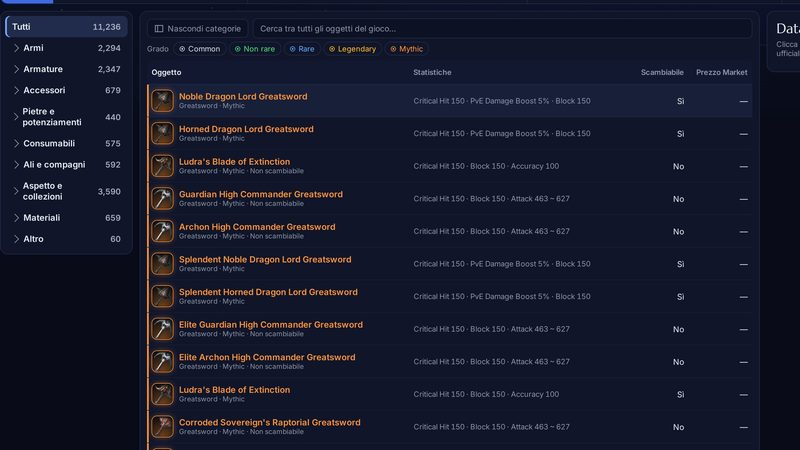
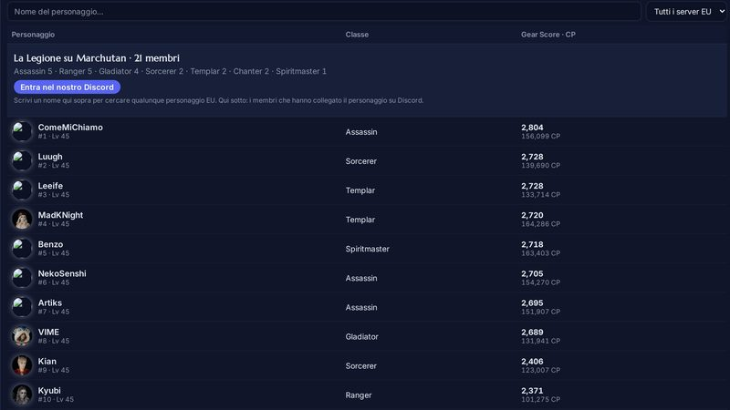
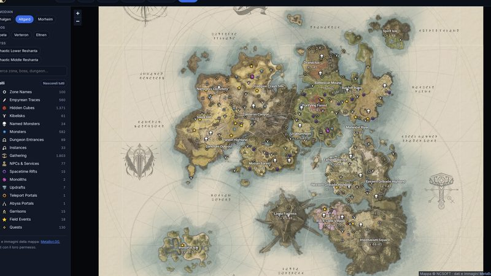

Server Asmodian EU · aggiornato ogni ora
Il Market di Aion 2, letto per te
Prezzo più basso, media e storico di ogni oggetto, gli affari da comprare e rivendere e quanto conviene craftare. Gratis, senza account.
- Oggetti
- —
- Da comprare
- —
- Da vendere
- —
Server: Marchutan · prezzi delle — · cambia server nel Market
Cosa trovi

Market
Prezzo più basso, media, trend a 7 giorni e segnale Compra, Vendi o Tieni per ogni oggetto.

Affari
Cosa comprare sotto la media e cosa rivendere, con il profitto già al netto della tassa.

Crafting
Craftarlo o comprarlo? Costo stimato con i prezzi di oggi e ricetta passo per passo.

Database
Tutti gli oggetti ufficiali di AION 2, con statistiche e descrizione.

Personaggi
Cerca un personaggio EU e guarda la Legione con Gear Score e progressi.

Mappa
Mappa interattiva con raccolta, boss, dungeon e cubi nascosti.
Il Market anche su Discord
Il bot della Legione porta i dati del sito nel nostro server Discord.
/infoscheda e grafico di un oggetto/affarii migliori affari ora/craftconviene craftarlo?/avvisoti tagga quando il prezzo arriva/preferitii tuoi oggetti del sito/personaggioscheda ufficiale di un personaggio
Un progetto della Legione
Gilda italiana Asmodian su Marchutan. Raid, eventi con promemoria e un server Discord attrezzato: entra, collega il personaggio e sei dei nostri.
Entra nel nostro Discord